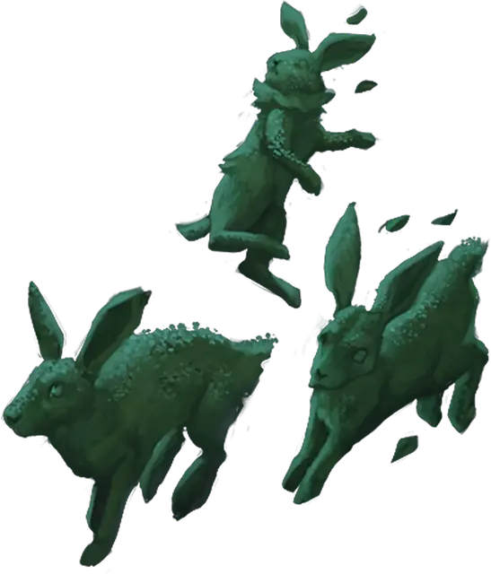

Пробуждённый куст
Awakened Shrub
Маленькое Растение, Нейтральное

Класс Защиты 9 Инициатива −1 (9)
Хиты 10 (3к6)
Скорость 20 футов
| мод | спас | ||
|---|---|---|---|
| СИЛ | 3 | −4 | −4 |
| ЛОВ | 8 | −1 | −1 |
| ТЕЛ | 11 | +0 | +0 |
| мод | спас | ||
|---|---|---|---|
| ИНТ | 10 | +0 | +0 |
| МДР | 10 | +0 | +0 |
| ХАР | 6 | −2 | −2 |
Уязвимость к урону Огонь
Сопротивление урону Колющий
Чувства пассивное Восприятие 10
Языки Общий плюс один другой язык
Опасность 0 (10 опыта; БВ +2)
Действия
Царапание. Бросок рукопашной атаки: +1, досягаемость 5 фт. Попадание: 1 Рубящего урона.
Бонус мастерства +2
Среда обитания Любая
Сокровища Личные, Инструментальные
Пробуждённые растения
Оживлённая магией растительность
Магия способна наделить растения подвижностью, разумом и даже даром речи. Такие заклинания, как Пробуждение разума, или влияние иных планов бытия могут вдохнуть жизнь в обычную растительность, а какие-то примечательные растения могут по своей природе обладать подобными свойствами.
Пробуждённые кусты могут быть любыми некрупными растениями — от лесного молодняка до густых цветочных зарослей. Часто они встречаются близ пробуждённых деревьев или в землях, пропитанных первозданной магией. У одних кустов — причудливый облик и листва, складывающиеся в грубые пародии лиц; другие же напоминают ожившие стриженые фигуры из зелени.